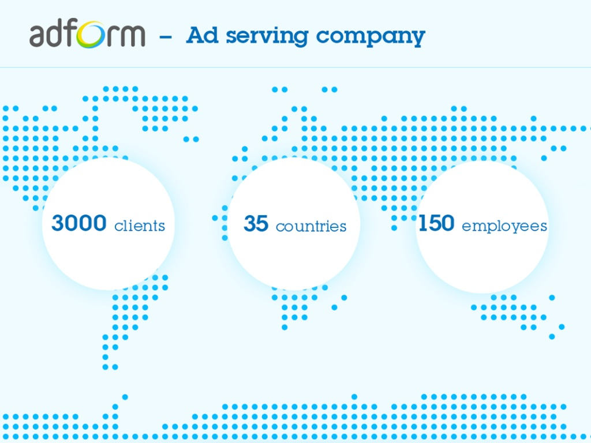
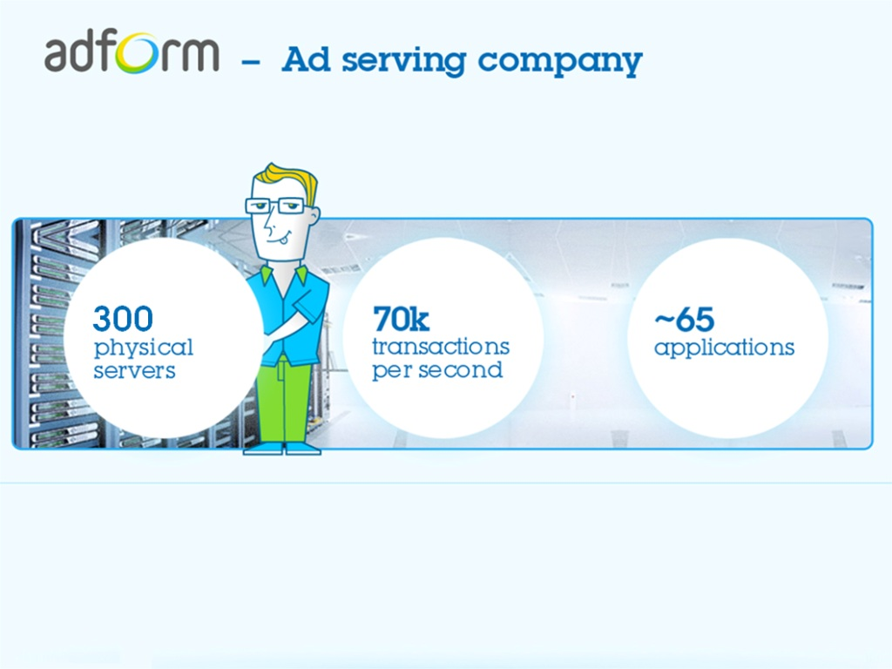
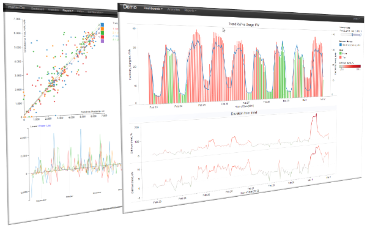
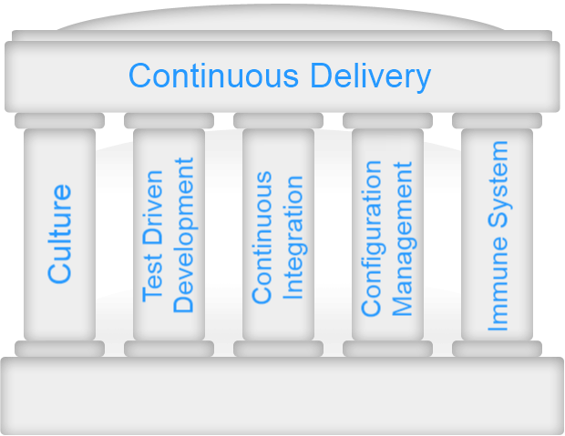
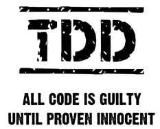
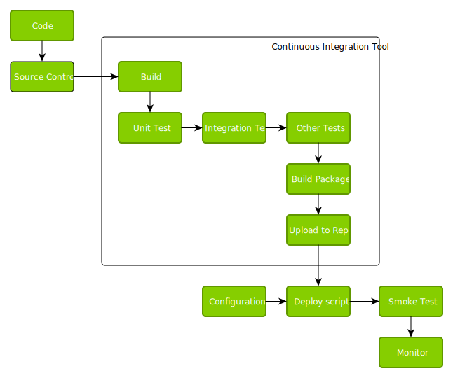

Continuous Delivery
- VISIT OUR BLOG: adform.com
- TWITTER: adforminsider
About me
- Gediminas Guoba
- Software Architect at Adform
- Email: gediminas.guoba@adform.com
- http://gediminasgu.github.com/presentation-continuous-delivery
Hello, I'm Gediminas Guoba. I work for Adform as Software Architect spending a lot on automation and Continuous Delivery.


About me 2
- CEO at meterHUB (meterOn)
- gediminas.guoba@meterhub.com
- 
Hello, I'm Gediminas Guoba. I work for Adform as Software Architect spending a lot on automation and Continuous Delivery.
Disclaimer
We’ve started to work on
Continuous Delivery(CD) about 2 years ago
and we want to share our experience
with you!
A few years ago we have started to using agile practices. During those years we became SCRUM gurus
learned how to count our performance and find-out that our performance is not so good as we have
expected.
Reality
In 2 weeks sprint only 5 days* are spent for actual development
* for the new Agile team
Before starting CD and I believe it's the same or similar for every new Agile team, we were spending only
about half of sprint for real development. Other part went Scrum rituals, manual regression testing, package
preparation, deployment to different environments, integration testing and so on.
Challenge
How to increase number of development days up-to 7?
Wouldn't it be nice having 7 or even 8 days for development in place of 5. That's from 40 to 60 additional days
per year for development!
Continuous Delivery to the rescue!
Continuous, successful and repeatable methodology to deploying code
How CD can help to get from 40 to 60 additional days per year for development? What it makes different?
From high abstraction level you can compare usual development process with CD like bucket with hose.
With bucket, you filling it up, going to place and then flushing in big chunks.
With hose you flushing continuously without such manual work like fill-up, go, flush
In usual development you are developing, testing, preparing package and releasing
The target of CD is to eliminate as much of manual routine tasks as possible automating it. So, in place of manual testing, package preparation and release all that things must be done automatically.
From high abstraction level you can compare usual development process with CD like bucket with hose.
With bucket, you filling it up, going to place and then flushing in big chunks.
With hose you flushing continuously without such manual work like fill-up, go, flush
In usual development you are developing, testing, preparing package and releasing
The target of CD is to eliminate as much of manual routine tasks as possible automating it. So, in place of manual testing, package preparation and release all that things must be done automatically.
Tasks for Continuous Delivery
- Source control
- Continuous Integration (CI)
- Unit tests
- Functional and UI tests
- Automated build & release
- Auto release package preparation
- Auto deployment
- Smoke tests
- Monitoring
So, to achieve CD you should be done following tasks.
Source control. I think it's common these days. But in any way you should have it, to run your code down by
the CD pipeline.
From source control your code goes to CI tool, automatically builds it, checks for quality running unit, integration, ui and other tests and if everything is OK, builds release package and prepares for release.
Later your package will be automatically deployed, run smoke tests to check if application runs correctly and thats all. Now you should just monitor your application to make sure that it runs without any problems and successfully provides service to your customer.
From source control your code goes to CI tool, automatically builds it, checks for quality running unit, integration, ui and other tests and if everything is OK, builds release package and prepares for release.
Later your package will be automatically deployed, run smoke tests to check if application runs correctly and thats all. Now you should just monitor your application to make sure that it runs without any problems and successfully provides service to your customer.
Continuous Integration Maturity Model
Intro
- Using Source Code
- Nightly Builds
- Current Issues Tracked & Knowledge base
Novice
- Builds triggered on Commit
- Automated Deploy to Dev
- Unit Tests Run on every build
- Generate Change Log
- Collect Code Coverage Data
- Code Integrity Checks
- Static Analysis Used
- Run-time Analysis
- Automated API Documentation generation
Intermediate
- Automated Deployment to testing environments
- On demand deployments to controlled environments
- Per Env. Smoke Test
- Manual Test Results in CI Server
- Business visibility reports
- Flag a CI build as Release Candidate (promotion)
- Product Activity Metrics
- Auto-update Defect Tracking
- Pre-commit Builds
- Data roll-up
- Automatic Cleanup of old Data
Advanced
- High Code Coverage
- Automatic Func. Testing
- Multi-Threaded / Scalable build systems
- Change Reporting / SQA Impacts
- Defect Trending
- Indentify Problem Code from Metrics
- Auto-Deploy to Prod
- Auto-Rollback in Prod
- Environment Monitoring
- Alerts based on build metrics tresholds
- Security Scans
Insane
- Continuous Deployment to Prod
http://www.slideshare.net/Urbancode/continuous-delivery-maturity-model
So... we went insane!
After two months...
- Custom configuration storage
- Custom package storage
- Automated package build and deployment
- Automated UI testing and smoke testing
- Automated server preparation
- Implemented some monitoring
- Became PowerShell gurus
- We have automated VMM!
And we FAILED...
Pillars of Continuous Delivery

Culture
Win together, loose together
Test driven development
- Testing isn’t a phase — it’s something that happens throughout the delivery life cycle
- Only automated testing matters
- It is more cost effective than debugging
- Start writing tests even you have zero tests
- Write test for every bug found

Next pillar is TDD and automated testing because only automated testing matters.
Two years ago we were spending a lot on manual regresion testing during release to PROD. And during the same
presentation when we said that we will start write unit test to gain some coverage we hard a lot of
"some legacy code is hard to test", "tests take too much time to write" and similar. Now from the same guys
I hear phrases like "don't forget to write tests", "that code part is poorly tested" and etc. So again,
it's something about culture too what you should change going to CD.
If you don't have any tests, you work on legacy code don't be afraid. Just start writing the first one. Start writing test for every bug found. Writing tests and writing really good tests is very hard. But don't stop after first fail, keep going. One day you will feel that you can fully trust tests and you don't need to test it manually. That's very good filling.
Just say your self "No more manual testing"!
If you don't have any tests, you work on legacy code don't be afraid. Just start writing the first one. Start writing test for every bug found. Writing tests and writing really good tests is very hard. But don't stop after first fail, keep going. One day you will feel that you can fully trust tests and you don't need to test it manually. That's very good filling.
Just say your self "No more manual testing"!
Continuous Integration
- Use Source Repository
- Automate builds and unit tests
- Automate package prepare and deploy
- Automate integration tests
Configuration Management
- Automate deployments to all environments
- Infrastructure as a Code
Immune System
- Gentle version switch
- Quick rollback
- Monitor system
- “Do we know that it still works?”
And the last thing, your system must be immune if you want to achieve CD. What does it mean?
If during the release your release package will fail in some place, your application shouldn't
stop providing service. In other words your clients shouldn't feel that application upgrade is going
even if your release has failed.
At Adform we use different version switch patterns. For example if we deploying application to many servers at first we deploy just to few of them and then running smoke tests, monitoring for bad things. If something goes wrong we just disconnect servers with new version from cluster and after rollback we test again and returning servers back to cluster.
If it is small web application which runs on one server we just deploy it to new folder and change server settings to server from new folder. If something wrong happens, we just switch back to old folder.
Recently we had very interesting experience when we started to migrate one web application to new architecture. Application was quite big and migration took several sprints. But in place collecting changes and releasing once after few sprints we did release each sprint redirecting just some users to new application. If they go try to use function which is not yet available in new application we redirect they back to old application. In such way sprint by sprint we migrated full application continuously releasing to PROD and receiving feedback.
And the last important thing for immune system is monitoring. Two years ago we were working without application monitoring and we didn't know if it works if it performs well. Now we can't imagine our system without monitoring and every new funcionality development starts from questions "what metrics we should provide to be sure that our service still works?". So now we are immedietly informed if something is wrong with our applications.
And again to start thinking in such way the mindset must be changed, the culture must be changed to achieve this.
At Adform we use different version switch patterns. For example if we deploying application to many servers at first we deploy just to few of them and then running smoke tests, monitoring for bad things. If something goes wrong we just disconnect servers with new version from cluster and after rollback we test again and returning servers back to cluster.
If it is small web application which runs on one server we just deploy it to new folder and change server settings to server from new folder. If something wrong happens, we just switch back to old folder.
Recently we had very interesting experience when we started to migrate one web application to new architecture. Application was quite big and migration took several sprints. But in place collecting changes and releasing once after few sprints we did release each sprint redirecting just some users to new application. If they go try to use function which is not yet available in new application we redirect they back to old application. In such way sprint by sprint we migrated full application continuously releasing to PROD and receiving feedback.
And the last important thing for immune system is monitoring. Two years ago we were working without application monitoring and we didn't know if it works if it performs well. Now we can't imagine our system without monitoring and every new funcionality development starts from questions "what metrics we should provide to be sure that our service still works?". So now we are immedietly informed if something is wrong with our applications.
And again to start thinking in such way the mindset must be changed, the culture must be changed to achieve this.
Tools
Process

There is a lot of different source controls but I have chose just few of them, the most popular.
So, that is SVN, the most simplest, Git and Mercurial. At Adform mostly we use SVN but recently
have started to move to Git. With Git we use GitLab. It's like GitHub but open source and ofcourse with
less features. These tools adds social layer to source repository
and brings such features for every even small application like issues, wiki, merge requests. Using GitLab
we find out that many tools which we have developed and use inside Adform became more documented, GitLab
became a place where you can register issue.
And the main feature which I like in GitLab is merge requests. We code features on separate branches and when it is finished we send merge request to some of team members asking to review code and merge it to the master branch. GitLab provides tools to review changed code, lets add comments to your code and similar stuff. So using that tool we started to review our code and get all the benefits of it.
And the main feature which I like in GitLab is merge requests. We code features on separate branches and when it is finished we send merge request to some of team members asking to review code and merge it to the master branch. GitLab provides tools to review changed code, lets add comments to your code and similar stuff. So using that tool we started to review our code and get all the benefits of it.
If you don't have CI tool there is a lot to choose of. The most popular open source CI tool is Jenkins. It has
more than 400 different plugins for different purpose. Another open source and very popular CI tool is build
bot. But it is for very advanced users. In the worls it is used to build and test MongoDB, Linux kernels.
The most oldest CI tool from these is CC, some tools like ThoughtWorks Go is using it as a platform.
Go and Teamcity is paid tools. You can use them free of charge if you have just a few projects
but if you need more you should buy it. At Adform we mostly use TeamCity. But there is some places where
we use Jenkins.
 Jenkins VMware plugin
Jenkins VMware plugin
Selenium WebDriver
Any other platform dependent tool

Or any Source Control


Or any Shell or Build script
- Application self-check
- Run unit test
- Quick selenium test
- Etc.

Final word
- Continuous Delivery implementation is continuous process
- Don’t try to implement everything at once
- Go step by step, get feedback and change your process accordingly
- Automate, Automate, review and Automate again! :)
Adform Now
- Completely automated package preparation, testing and registration for release
- Different types of tests: unit, integration, API, JavaScript, UI and other
- Single click, environment aware deployment
- Company wide monitoring
- Teams deploys to Production at any time
- Releazr, SkypeBOT
Thank You!
- VISIT OUR BLOG: adform.com
- TWITTER: adforminsider